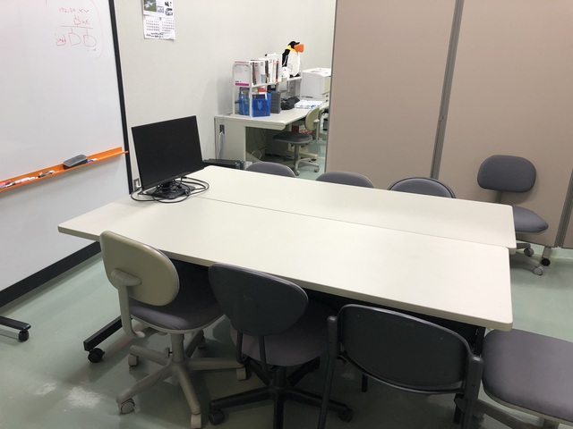

研究室の紹介
研究室の様子
研究室(GII-618)では，学生一人ひとりにパーティションで区切られた座席と，計算機(PC)が一台与えられます．研究室にはプリンタや談話スペースもあります．無線LANも完備されているため，自分のノートPCを使って研究することも可能です．
パーティションで区切られた座席(一人一席)

談話スペース
共用図書とプリンタ
研究活動
当研究室では週に一回，全員参加でのゼミを開催します．学部 4 年生と大学院生は各自，一週間の研究活動の内容を報告し，参加者全員で議論します．
配属されたばかりの学部 3 年生は，与えられた論文を読み，その内容を発表してもらいます．卒論の研究テーマは，この論文調査で通じて探し，最終的には先生と相談した上で年度内に決定します．
ゼミとは別に不定期(週一程度)で，学生主体の輪講を行っています．学生が主体で読む本を選び，参加者で分担して担当部分を決め，解説を行います．2019 年度は入門コンピュータ科学を読みました．
研究発表
学部4年生は，年度末に学内で開催される卒業研究発表会にて研究発表を行います．また，優れた研究を行った学生には，国内で開催される電子情報通信学会総合大会や研究会などにて研究発表してもらいます．
卒業研究発表会
学会発表
計算機
機械学習用の高性能計算機(上原研と共用)ほかいくつかの計算機を保有しています．そのため，計算能力を必要とする研究に取り組むことも出来ます．
機械学習用の高性能計算機(上原研と共用)

その他の計算機
計算機を格納するラック
飲み会
新入生歓迎会，忘年会など飲み会を開催しています．